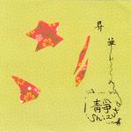

| Artist: | Shizuka |
| Title: | Sho-ka |
| Label: | Vital/Poseidon RecordsVR-006 |
| Length(s): | 47 minutes |
| Year(s) of release: | 2003 |
| Month of review: | [12/2003] |
| 1) | Hi | 4.09 |
| 2) | Yume | 3.56 |
| 3) | Sou | 2.55 |
| 4) | Kokoro | 4.07 |
| 5) | Ai | 3.48 |
| 6) | Tori | 3.43 |
| 7) | Katari | 3.46 |
| 8) | Nan | 3.58 |
| 9) | Irodori | 6.06 |
| 10) | Ame | 2.55 |
| 11) | 7.54 |